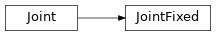
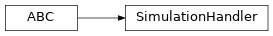

scene
Everything to describe scenes to be simulated.
Subpackages
Package Contents
Classes
An axis aligned bounding box. |
|
Represents a color in RGBA format. |
|
Interface for controlling a scene during simulation. |
|
Base class for all joints. |
|
A joint fixing the rigid bodies together rigidly. |
|
A hinge joint, also known as revolute joint. |
|
A (possibly cyclic) graph of interconnected rigid bodies, joints, and other objects, such as cameras. |
|
A position and orientation. |
|
A collection of geometries and physics parameters. |
|
Description of a scene that can be simulated. |
|
Base class for handling a simulation, which includes, for example, controlling robots. |
|
Interface for the state of a simulation at certain point. |
|
Wraps a value and implements __eq__ and __hash__ based purely on id(value). |
- class AABB
An axis aligned bounding box.
- size: pyrr.Vector3
Sizes of the length of the bounding box.
Not half of the box.
- class Color
Represents a color in RGBA format.
All values should from 0 to 255.
- red: int
- green: int
- blue: int
- alpha: int
- to_normalized_rgba_list() list[float]
Convert to rgba list where each value is between 0 and 1.
- Returns:
The list.
- to_normalized_rgb_list() list[float]
Convert to rgb list where each value is between 0 and 1.
- Returns:
The list.
- class ControlInterface
Bases:
abc.ABC
Interface for controlling a scene during simulation.
- abstract set_joint_hinge_position_target(joint_hinge: simulation.scene._joint_hinge.JointHinge, position: float) None
Set the position target of a hinge joint.
- Parameters:
joint_hinge – The hinge to set the position target for.
position – The position target.
- class Joint
Base class for all joints.
- property uuid: uuid.UUID
Get the uuid.
- Returns:
The uuid.
- pose: simulation.scene._pose.Pose
Pose of the joint.
- rigid_body1: simulation.scene._rigid_body.RigidBody
The first attached rigid body.
- rigid_body2: simulation.scene._rigid_body.RigidBody
The second attached rigid body.
- class JointFixed
Bases:
simulation.scene._joint.JointA joint fixing the rigid bodies together rigidly.
This makes them effectively a single rigid body.
- class JointHinge
Bases:
simulation.scene._joint.Joint
A hinge joint, also known as revolute joint.
Rotates around a single axis.
- axis: pyrr.Vector3
Directional vector the joint rotates about.
- range: float
Rotation range of the joint in radians.
How much it can rotate to each side, in radians. So double this is the complete range of motion.
- effort: float
Maximum effort the joint can exert, in newton-meter.
- velocity: float
Maximum velocity of the joint, in radian per second.
- armature: float
Armature of the joint.
This represents the inertia of the motor itself when nothing is attached.
- pid_gain_p: float
Proportional gain of the pid position controller.
- pid_gain_d: float
Derivative gain of the pid position controller.
- class MultiBodySystem
A (possibly cyclic) graph of interconnected rigid bodies, joints, and other objects, such as cameras.
The first rigid body added is considered the root of the system. That is, if the system is static, that rigid body will be static.
- property uuid: uuid.UUID
Get the uuid.
- Returns:
The uuid.
- property root: simulation.scene._rigid_body.RigidBody
Get the root rigid body of this multi-body system.
The root rigid body is the first rigid body that has been added.
- Returns:
The root rigid body.
- pose: simulation.scene._pose.Pose
Pose of the system.
- is_static: bool
Whether the root rigid body is static.
I.e. its root (the first rigid body) is attached to the world and will not move or rotate.
- add_rigid_body(rigid_body: simulation.scene._rigid_body.RigidBody) None
Add a rigid body to the system.
- Parameters:
rigid_body – The rigid body to add.
- add_joint(joint: simulation.scene._joint.Joint) None
Add a joint between two rigid bodies.
- Parameters:
joint – The joint to add.
- has_root() bool
Check whether a root has been added.
The root rigid body is the first rigid body that has been added, so this is only false if there are zero rigid bodies in this multi-body system.
- Returns:
Whether there is a root joint.
- get_joints_for_rigid_body(rigid_body: simulation.scene._rigid_body.RigidBody) list[simulation.scene._joint.Joint]
Get all joints attached to the provided rigid body.
- Parameters:
rigid_body – A previously added rigid body.
- Returns:
The attached joints.
- calculate_aabb() tuple[pyrr.Vector3, simulation.scene._aabb.AABB]
Calculate the axis-aligned bounding box of this multi-body system when it is in T-pose.
That is, when all joints are at position 0. Only box geometries are currently supported.
- Returns:
Position, AABB
- Raises:
ValueError – If one of the geometries is not a box.
- class Pose
A position and orientation.
- position: pyrr.Vector3
Position of the object.
- orientation: pyrr.Quaternion
Orientation of the object.
- class RigidBody(initial_pose: simulation.scene._pose.Pose, static_friction: float, dynamic_friction: float, geometries: list[simulation.scene.geometry.Geometry])
A collection of geometries and physics parameters.
- property uuid: uuid.UUID
Get the uuid.
- Returns:
The uuid.
- initial_pose: simulation.scene._pose.Pose
- static_friction: float
- dynamic_friction: float
- geometries: list[simulation.scene.geometry.Geometry]
- sensors: _AttachedSensors
- mass() float
Get mass of the rigid body.
- Returns:
The mass.
- center_of_mass() pyrr.Vector3
Calculate the center of mass in the local reference frame of this rigid body.
If no geometry has mass, the average position of all geometries is returned, unweighted.
- Returns:
The center of mass.
- inertia_tensor() pyrr.Matrix33
Calculate the inertia tensor in the local reference frame of this rigid body.
For more details on the inertia calculations, see https://en.wikipedia.org/wiki/List_of_moments_of_inertia.
- Returns:
The inertia tensor.
- Raises:
ValueError – If one of the geometries is not a box.
- class Scene
Description of a scene that can be simulated.
- property multi_body_systems: list[simulation.scene._multi_body_system.MultiBodySystem]
Get the multi-body systems in scene.
Do not make changes to this list.
- Returns:
The multi-body systems in the scene.
- add_multi_body_system(multi_body_system: simulation.scene._multi_body_system.MultiBodySystem) None
Add a multi-body system to the scene.
- Parameters:
multi_body_system – The multi-body system to add.
- class SimulationHandler
Bases:
abc.ABCBase class for handling a simulation, which includes, for example, controlling robots.
- abstract handle(state: simulation.scene._simulation_state.SimulationState, control: simulation.scene._control_interface.ControlInterface, dt: float) None
Handle a simulation frame.
- Parameters:
state – The current state of the simulation.
control – Interface for setting control targets.
dt – The time since the last call to this function.
- class SimulationState
Bases:
abc.ABC
Interface for the state of a simulation at certain point.
- abstract get_rigid_body_relative_pose(rigid_body: simulation.scene._rigid_body.RigidBody) simulation.scene._pose.Pose
Get the pose of a rigid body, relative to its parent multi-body system’s reference frame.
- Parameters:
rigid_body – The rigid body to get the pose for.
- Returns:
The relative pose.
- abstract get_rigid_body_absolute_pose(rigid_body: simulation.scene._rigid_body.RigidBody) simulation.scene._pose.Pose
Get the pose of a rigid body, relative the global reference frame.
- Parameters:
rigid_body – The rigid body to get the pose for.
- Returns:
The absolute pose.
- abstract get_multi_body_system_pose(multi_body_system: simulation.scene._multi_body_system.MultiBodySystem) simulation.scene._pose.Pose
Get the pose of a multi-body system, relative to the global reference frame.
- Parameters:
multi_body_system – The multi-body system to get the pose for.
- Returns:
The relative pose.
- abstract get_hinge_joint_position(joint: simulation.scene._joint_hinge.JointHinge) float
Get the rotational position of a hinge joint.
- Parameters:
joint – The joint to get the rotational position for.
- Returns:
The rotational position.
- abstract get_imu_specific_force(imu_sensor: simulation.scene.sensors.IMUSensor) pyrr.Vector3
Get the specific force measured an IMU.
- Parameters:
imu_sensor – The IMU.
- Returns:
The specific force.
- abstract get_imu_angular_rate(imu_sensor: simulation.scene.sensors.IMUSensor) pyrr.Vector3
Get the angular rate measured by am IMU.
- Parameters:
imu_sensor – The IMU.
- Returns:
The angular rate.
- abstract get_camera_view(camera_sensor: simulation.scene.sensors.CameraSensor) numpy.typing.NDArray[numpy.uint8]
Get the camera view.
- Parameters:
camera_sensor – The camera.
- Returns:
The view.
- class UUIDKey(value: _T)
Bases:
Generic[_T]
Wraps a value and implements __eq__ and __hash__ based purely on id(value).
- property value: _T
Get the wrapped value.
- Returns:
The value.
- __eq__(other: object) bool
Compare with another wrapped value using their ids.
- Parameters:
other – The object to compare with.
- Returns:
Whether their ids are equal.
- Raises:
ValueError – If the other objecgt is not an UUIDKey.
- __hash__() int
Hash this object using its id only.
- Returns:
The hash.